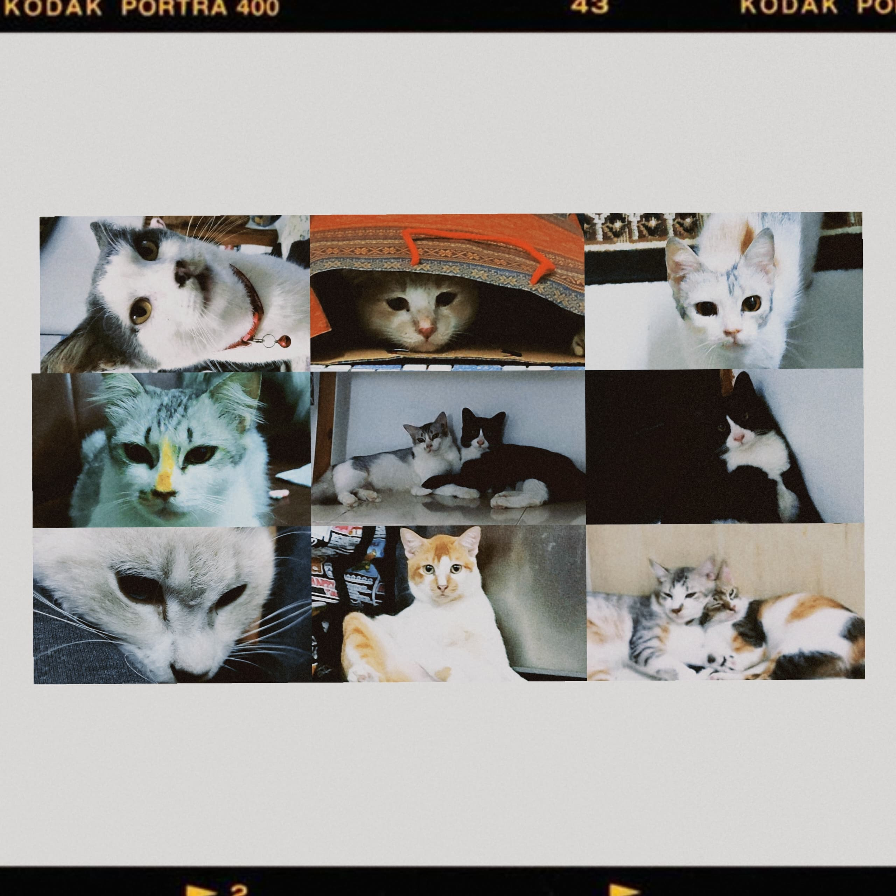

Welcome to the Cat Corner ‚ãÜÀöüêæÀñ¬∞
Let me introduce to you some of my lovely cats!

| Name | Abang |
|---|---|
| Gender | Male |
| Breed | "Kucing Malaysia" |
| Color | Black and White |
| Status | The Oldest of my family's cat and known as "abang kawasan" in our neighbourhood. |
| Found date | Me and my family didn't know when Abang were born because we found him at oil station near our neighbourhood in 2018. We keep Abang for about 4-5 years before we lost him. |
| Personality | He loves to stay outside and only comes home to eat and sleep when it's cold and rainy. He's adorable and cute, but he loves to fight, climb rooftops, and catch birds. He always comes home with dirty fur, as if he's been working in a workshop or factory. |
| Name | Babat |
|---|---|
| Gender | Male |
| Breed | "Kucing Malaysia" |
| Color | Cream and white sometimes look like "Oyen" |
| Status | My mom's next favorite after Abang. He is the second generation for my family's cat. Also known as "abang kawasan". |
| Birth Date | 12th November 2020. His mother run away from house 3 months after giving birth to him and never come back home. |
| Personality | Need to put him outside the house because he will peeing a lot, and he looks like a homeless cat with no owner because he doesn't like it when I try to groom him (sigh). |
| Name | Nini |
|---|---|
| Gender | Female |
| Breed | "Kucing Malaysia" |
| Color | Gray and White |
| Status | the only female cat in our house right now. |
| Found Date | My uncle give her to us because he worried that Nini might catch her sibling's disease at that time. We adopt her at the right time because after that, the other sibling of her dead. |
| Personality | the grumpy type of cat and only love me when first we adopt her. Even now, whenever I need to leave for Kedah, she sulks and refuses to bid me goodbye. |
| Name | Fifi aka pipi |
|---|---|
| Gender | Male |
| Breed | "Kucing Malaysia" but maybe a tuxedo cat? |
| Color | Black and White |
| Status | the kid that everyone love right now |
| Found Date | My mom bought him to our house because his mother lost after giving birth to him and his brother at mom's workplace. His brother dead few days after we keep them. |
| Personality | He has a love-hate relationship with me. During the day, he fights and bites me, but at night, he scratches at my bedroom door, begging to stay with me. Pipi loves to eat half-boiled eggs, which is probably why he's so big and obese. I've already told my mom to stop giving him half-boiled eggs before his belly explodes! |
| Name | Oyen |
|---|---|
| Gender | Male |
| Breed | "Kucing Malaysia" |
| Color | Orange and White |
| Status | once the favorite of everyone |
| Found Date | While eating at a food stall with my parents, Oyen approached me, showing his adorable side and showering me with affection. When it was time to leave, Oyen followed us and nearly got hit by a car. That's when we knew we had to keep him. |
| Personality | as you can see in the photo I shared, Oyen absolutely adores food. He's quite the adventurous outdoor cat, always climbing and exploring. There was a time when he came home injured, and we took care of him. He even chose to stay with me overnight. However, after I had to move to Kedah for my studies, he distanced himself from our family. When I returned home during semester breaks, Oyen would spend a couple of days sleeping in my room before disappearing again and never come back |
Cats Captured by Me Àô‚úßÀñ¬∞üì∑ ‡ºò ‚ãÜÔΩ°Àö |
||
 |
||